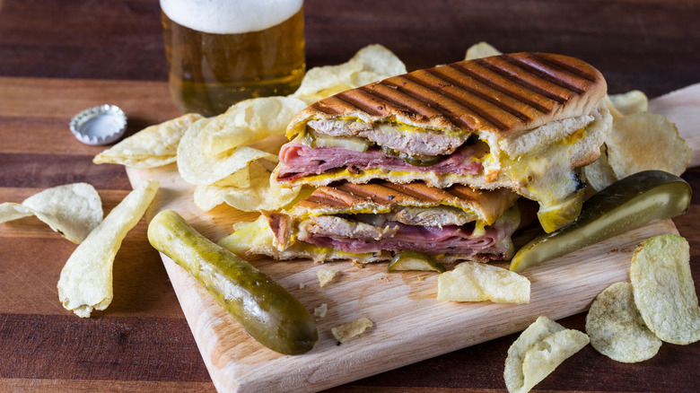

Cuban Sandwich

There are different recipes for Cuban sandwiches. Here's how I build my Cuban, or Cubano. I like to use pulled pork. Carnitas would work too. These ingredients and amounts are open to your own personal preferences, but here's a general idea.
Ingredients List
- ¼ cup mayonnaise
- ¼ cup mustard
- 1 pinch cayenne pepper
- 1 (8 ounce) loaf Cuban bread
- 8 slices Swiss cheese
- 6 thin slices smoked fully-cooked ham
- 1 ½ cups cooked pulled pork, heated
- 1 large dill pickle, sliced thinly lengthwise
- 2 tablespoons butter, or as needed
Directions
- Mix mayonnaise, mustard, and cayenne together in a bowl to make the sauce.
- Trim off ends of bread. Cut loaf in half and evenly split bread to make tops and bottoms of two sandwiches. Spread each half on both sides generously with the mayo-mustard sauce.
- Divide sandwich ingredients between the two bottom halves in this order: 2 slices Swiss cheese, 3 slices ham, hot cooked pork, pickle slices, and 2 more slices Swiss cheese. Place tops on sandwiches.
- Melt butter in a heavy skillet over medium heat. Place sandwiches in the skillet and press down with a heavy weight (such as another skillet or foil-wrapped bricks). Toast sandwiches until bread is crisp and filling is heated through, 3 or 4 minutes per side.